Definizioni: RETE: interconnessione di dispositivi in grado di scambiarsi informazioni, quali sistemi terminali, router, switch e modem.
Sistemi terminali: sono gli host
Dispositivi di interconnessione: Router (liv 3) interconnettono reti , Switch (liv 2) collegano gli host a livello locale
Link: Collegamenti, mezzi trasmissivi (fibra, cablati, wireless ecc...)
LAN: Local Area Network, reti di computer circoscritte in una piccola area (reti private)
WAN: Wide Area Network, Rete geografica, inteconnette LAN, gestite da operatori di rete (ISP)
WAN punto - punto: collega due dispositivi tramite mezzo trasmissivo
WAN a commutazione: collega più di due punti di terminazione usando elementi di commutazione (servono per connettere fra loro due o più linee di trasmissione)
Gli host si connettono a internet tramite Internet Service Provider (ISP) che a loro volta sono interconnessi tra loro
Gli ISP prendono tot punti di accesso alla rete e tra ISP possono essere punti detti Peering point dove si connettono due ISP e si accordano tra loro per il traffico su quel canale. Oppure ci sono i IXP Internet eXchange Point dove si fa peering tra due o più ISP
Ip produttori di contenuti (Amazon, Netflix, Facebook ecc..) possono creare la loro propria rete privata dette Content provider network
Commutazione di pacchetto e circuito, Metriche
Tecniche di commutazione sono le modalità con cui viene determinato il percorso sorgente-destinazione e vengono dedicate ad esso le risorse della rete
Commutazione di circuito: Creazione di un cammino dedicato tra due dispositivi, permanente ed esclusive sono le risorse fisiche dei nodi della rete. Si fa un setup della comunicazione
Commutazione di pacchetto: Il flusso di dati punto-punto viene suddiviso in pacchetti instradato singolarmente e in modo indipendente dagli altri
METRICHE di una RETE
DA FARE....
Cosa è un PROTOCOLLO
Protocollo: Insieme di regole che permettono a due entità di comunicare
Oggi giorno i protocolli non sono unici ma in insieme strutturato e organizzato di protocolli su più "livelli" chiamati anche MODULI
Perchè stratificare
Scomposizione dei sistemi complessi:
La struttura permette di identificare le relazioni tra gli elementi del sistema complesso
modello di riferimento stratificato
Suddivisione di funzioni e attori
Facilito la manutezione
Un modulo svolge un insieme limitato di compiti e appare come una scatola nera su cui inserisco input e prelevo dati elaborati
Ogni livello offre: servizi allo strato superiore, utilizza servizi del livello inferiore, implementa azioni all'interno di se
Separazione tra servizi offerti e implementazione
Come stratificare
Principi base:
Separation of Concern
Information hiding
In questo modo si soffisfano i requisiti di efficacia e efficienza.
Livelli INDIPENDENTI utlizzabili tramite interfaccie nascondendo implementazione.Il numero degli strati e minimizzato e man mano che si va avanti cambia il livello di astrazione sui dati
OSI RM (Open System Interconnection)
Sistemi chiusi
Le prime reti di calcolatori erano sistemi chiusi (marche e macchine proprietarie, difficile l'integrazione tra marche diverse).
Sistemi aperti
Tramite questi si può permettere di creare una rete di calcolatori in cui qualsiasi terminale può comunicare con un qualsiasi fornitore di servizi mediante qualsiasi rete
Sono necessari degli STANDARD
Definizioni:
Strato: modulo definito attraverso i servizi, i protocolli e le intefaccie che lo caratterizzano
Servizio: Servizio che uno strato fornisce ad uno strato soprastante attraverso primitive di servizio
Interfaccia: Insieme di regole che governano il formato e la sintassi delle unità di dati che vengono scambiati tra due strati adiacienti della stessa entità
Cosa specificare in un protocollo?
La Sintassi di un messaggio
La Semantica del messaggio
Le azioni da intraprendere dopo la ricezione di un msg
Strato nel modello ISO/OSI
Livello Fisico
Comprende tutte le funzioni che permettono una connessione a livello fisico
Si occupa della trasmissione dei bit attraverso il mezzo trasmissivo e caratteristiche di cavi e connettori
Livello Collegamento
Definisce regole per inviare e ricevere info tra due sistemi di comunicazione
Permette il trasferimento affidabile di dati attraverso il livello fisico
Incapsula i dati da inviare in un pacchetto provvisto di header e tail, chiamato FRAME
Livello di Rete
Gestione del "ROUTING" dei pacchetti, ovvero si determina la sequenza di collegamenti punto-punto necessari per trasmettere un pacchetto da un nodo generico dalla rete a un altro
Livello di Trasporto
Instaura, mantiene e termina una connessione
Funzionalità per frammentare e ricomporre dati, rileva e corregge errori, controlla il flusso di dati
Fornisce un servizio di trasferimento dati end-to-end
Livello Sessione
Assembla il dialogo tra nodi in unità logiche (Sessione)
Livello Presentazione
Adatta la sintassi dei dati di ciascuna applicazione alla sintassi richiesta dalla sessione
Livello Applicazione
Protocolli a supporto di applicazioni distribuite
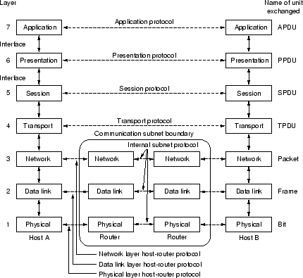
Stack protocollare TCP/IP
Famiglia di protocolli attualmente utilizzata oggi in internet. Si tratta di una gerarchia di protocolli ciascuno dei quali fornisce funzionalità specifiche
TCP/IP = 5 Livelli: 4 SW + 1 HW
Applicazione: supporta le applicazioni di rete, collegamento logico end-to-end (ftp,smtp,http)
Trasporto: trasferimento dati ent-to-end, da sorgente a destinatario (tcp, udp)
Rete: Instradamento dei datagrammi dalla sorgente alla destinazione (Ip, ICMP)
Link: trasferimento dati in frame attraverso il collegamento tra elementi di rete vicini (ppp, ethernet, altro...)
Fisico: trasferimenti dei biti di un frame sul mezzo trasmissivo
Strato Applicativo
Paradigmi del livello applicazione e applicazione di rete
URI, URL e URN
HTTP: HyperText Transfer Protocol
Telnet
TErminaL NETwork: Protocollo di terminale remoto il cui scopo è quello di permettere l'uso interattivo di macchine remote:
lavoro remoto
accesso multiplo ad un computer
coppie generiche client-server per login remoto (non specializzate per tipo di applicativo)
Permettte all'utente di effetthare una sessione di login remoto nella macchina remota e quindi inviare i comandi mascherando sia la rete che i sistemi operativi e utilizzanod una interfaccia minima ma veloce.
Dopo il login telnet passa le battute dei tasti della macchina locale alla macchina remota e l'output della macchina remota viene trasportato al terminale dell'utente
Il modello TELNET include:
Un programma server che accetta le richieste
Un programma client che effettua le richieste
Interagisce com il terminale utente sull'host locale
Scambia messaggi con il telnet server
Protocollo TELNET [RFC 854]
Il client stabilisce con il server una connessione TCP
Il client accetta le battute dei tasti e le invia al server. Accetta i caratter i che il server manda indietro e li visualizza sul terminale utente
Il server accetta la connessione TCP e trasmette i dati al sistema operativo locale
Il client si connette alla PORTA 23 del server. Connessione TCP persistente per tutta la durata della sessione di login.
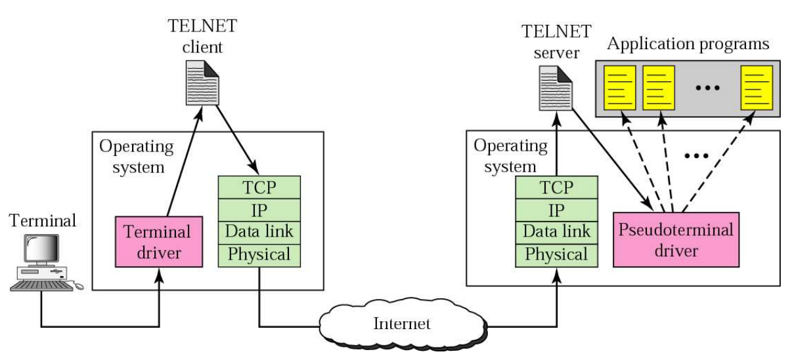
Pseudo terminal driver: entry point del Sistema operativo che consente di trasferire caratteri a un processo come se provenissero dal terminale. Quindi in questo caso accetta i caratteri dal server Telnet e li trasmette al SO che poi invierà ai rispettivi applicativi opportuni.
Telnet assume che sui due host siano in exec un NVT - Network Virtual Terminal. La connessione TCP avviene tra questi due terminali virtuali che serve per avere un terminale "comune" a due host che potrebbero essere potenzialmente molto diversi.
Questi terminali NVT si scambiano dati a 7 bit US-ASCII. Dati inviati come ottetti dove il primo è settato a 0.
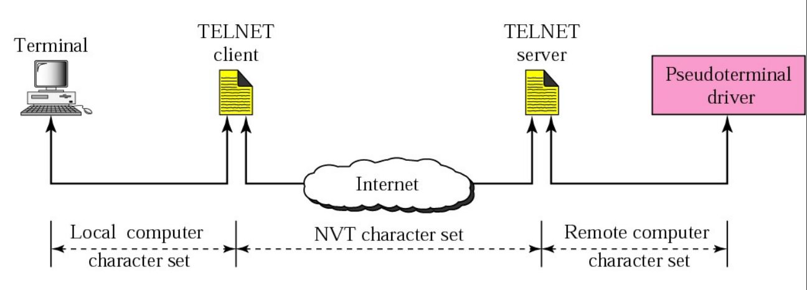
SSH è un protocollo creato per sostituire Telnet poichè quest'ultimo passa tutti i dati in chiaro (anche le password)
Email - SMTP
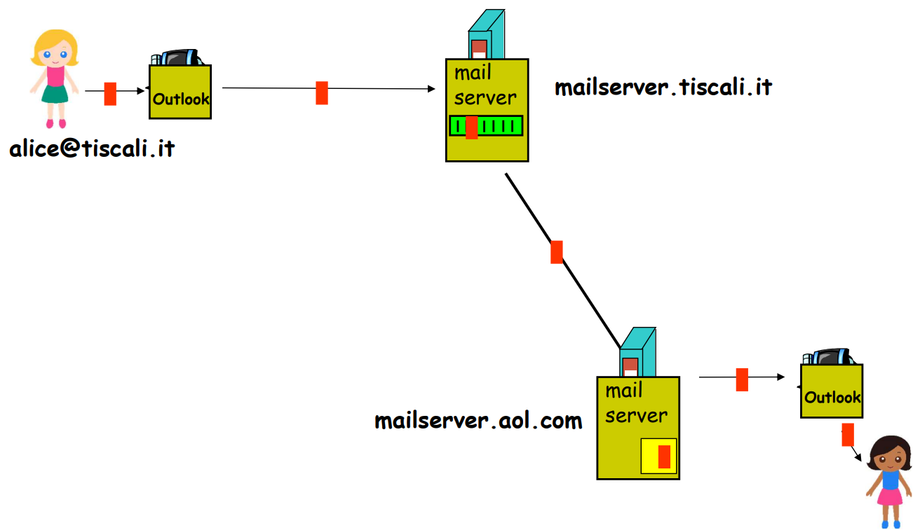
Esempio nterazione con server SMTP:
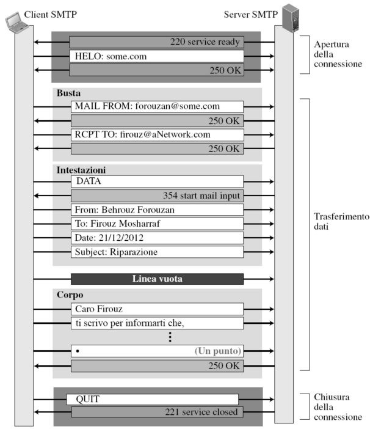
File Transfer Protocol - FTP
Esempio connessione tra client e server con FTP per trasferimento file:
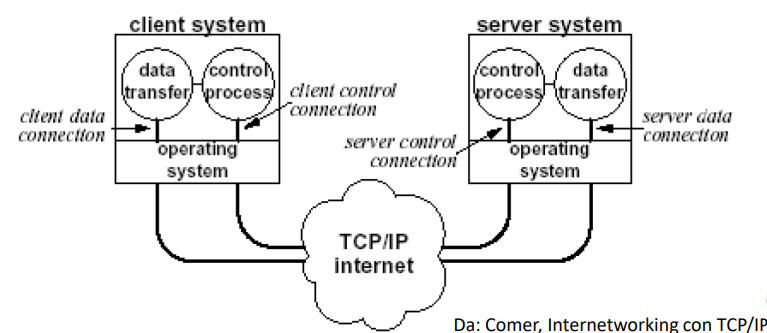
DNS - Domain name Service
Strato di Trasporto
Obiettivo
Realizzare una comunicazione logica fra due processi residenti in host system diversi. Logico perchè i due processi pensano di essere fisicamente collegati e non c'è bisogno di sapere dei dettagli dell'infrastruttura fisica sottostante per la comunicazione. Offre servizi allo stato di Applicazione. Usa i servixi dello strato di Rete.
Servizio privo di connessione
In un servizio privo di connessione il processo mittente consegna messaggi al livello di trasporto uno per uno
Il livello di trasporto tratta ogni messaggio come entità singola senza mantenere alcuna relazione fra di essi
I messaggi possono non essere consegnati o non arrivare in ordine
Servizio orientato alla connessione
In un servizio orientato alla connessione client e server stabiliscono luna connessione LOGICA
Protocollo TCP [RFC 793]
Gestione della connessione
Consegna affidabile (Priva di errori, completezza e ordine)
Flow Control
Controllo di congestione
Il protocollo UDP [RFC 768]
Senza connessione
Non affidabile, consegne senza ordine
Estensione del servizio di consegna "host to host" di ip
Servizi offerti:
Multiplexing / demultiplexing
Controllo degli errori (header + dati)
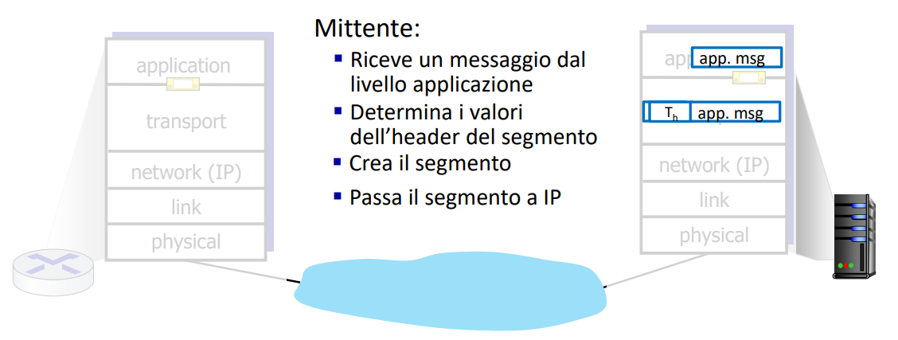
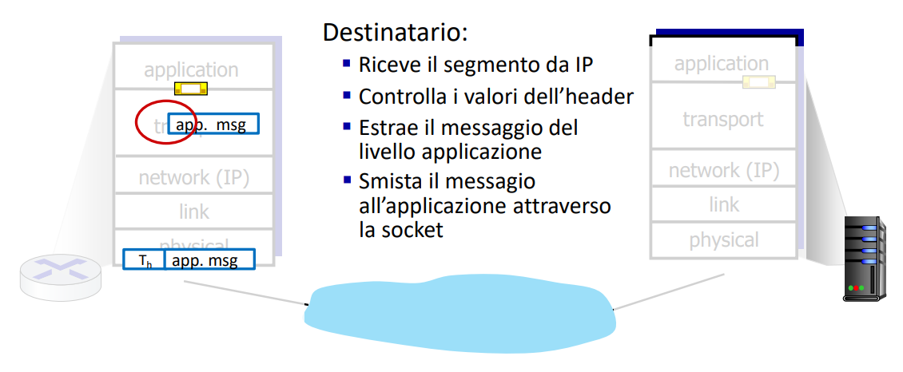
Demultiplexing
Lo strato di trasporto provvede allo Smistamento dei pacchetti fra la rete e le applicazioni (I processi)
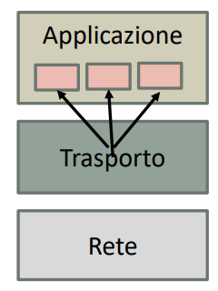
Es: utente che scarica pagine web && trasferisce file con FTP && ha 1 sessione telnet aperta allora ha 3 processi applicazione che usano TCP e quando il libello trasporto riceve i dati (da sotto, ovvero rete) deve dirigerli a uno di questi processi
L'host riceve il datagramma IP. Ogni datagramma ha indirizzo IP sorgente e indirizzo IP destinatario. Ogni datagramma trasporta un segmento di livello trasporto. Ogni segmento contiene nell'header un numero di porta sorgente e un numero di porta destinazione
Multiplexing
Lo strato di trasporto provvede all'accorpamento dei flussi dati dai processi verso la rete "imbustando" i dati ricevuti (dall'alto) con un preambolo
In generale le operazioni di multi e demulti si basano sui socket address dei processi (Il Socket address è la combinazione tra ip e numero porta)
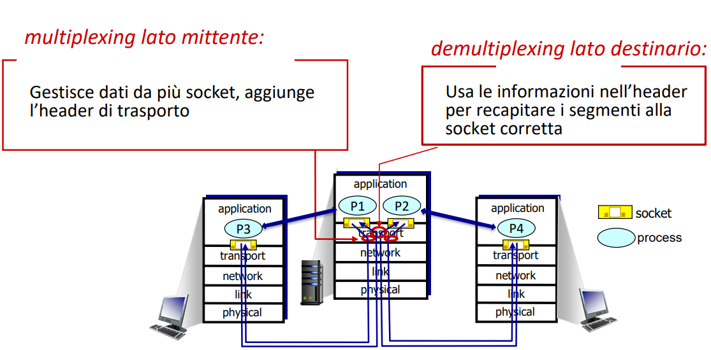
Concetto di porta
Ogni comunicazione di trasporto (TCP o UDP) è identificata in maniera univoca grazie alle coppie numero IP/porta degli host
La "porta" è un numero (unsigned int - 16 bit) che viene assegnato a un processo, o più precisamente a un punto di demultiplexing dei protocolli TCP o UDP. L'indirizzo IP è un indirizzo di 32 bit presente nello stack TCP/IP
System ports: da 0 a 1023, assegnate da IANA
User ports: da 1024 a 49151, assegnate da IANA
Dynamic Port: non assegnate da IANA
Il sistema operativo assegna dinamicamente le porte ai processi che ne fanno richiesta
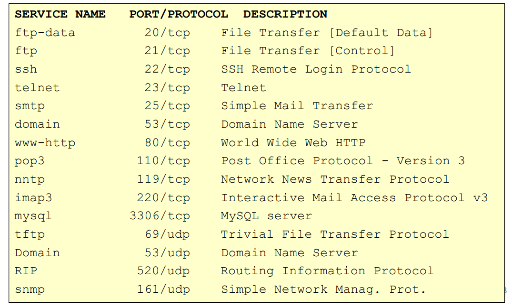
Demultiplexing Senza connessione - UDP
Creazione automatica di socket DatagramSocket mySocket = new DatagramSocket();
Socket UDP identificata dalla coppia (ip, porta)
Lo strato di trasporto dell'host ricevente consegna il segmento UDP alla socket identificata da IP e porta destinazione
I datagramma con IP e/o porta mittente differenti ma stessi IP e porta destinatari vengono consegnati alla stessa socket
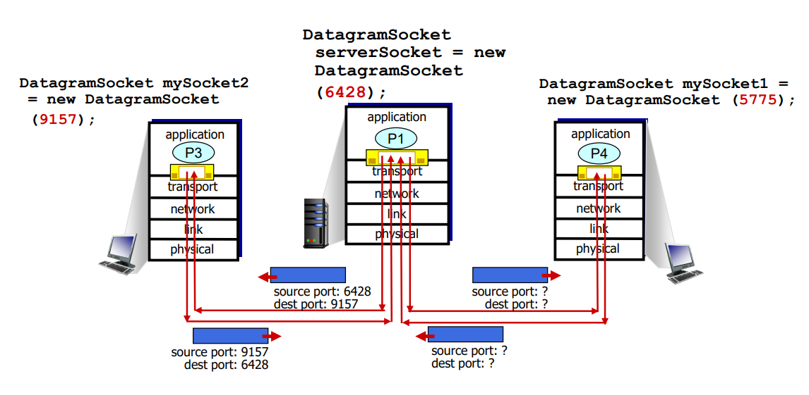
Demultiplexing Orientato alla connessione
La socket TCP connessa è identificata da 4 parametri:
IP origine
num porta origine
IP destinazione
num porta destinazione
L'host ricevente usa i 4 parametri per inviare il segmento alla socket appropriata
Un host server può supportare più socket contemporaneamente
es. nei server Web ci sono socket diversi uno per client
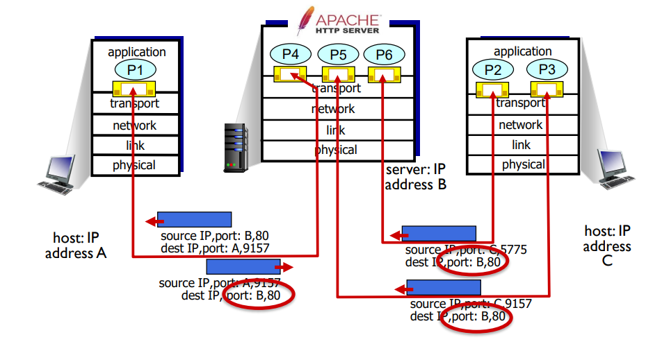
TCP
Orientato allo STREAM
Lunghezza di byte indefinita a priori
TCP vede i dati come un flusso di dati ordinati, ma non strutturati
Orientato alla CONNESSIONE
I processi effettuano un handshake PRIMA dello scambio di dati
ORIENTATO poiche lo stato della connessione risiede sui punti terminali non sugli elementi intermedi dlla rete (ad es. router)
La connessione è vista dagli applicativi come un circuito dedicato
Connessione FULL-DUPLEX
il flusso di dati può avvenire da entrambe le direzioni contemporaneamente poichè slegate
connessione punto-punto
Proprietà TCP
Trasferimento dati ordinato e affidabile
Controllo del flusso
Controllo di congestione
Trasferimento bufferizzato
Il software del protocollo TCP è libero di suddividere il flusso di byte in "segmenti" in modo indipendente dal programma applicativo che li ha generati usanto BUFFER
La bufferizzazione consente una riduzione del traffico sulla rete ottimizzando
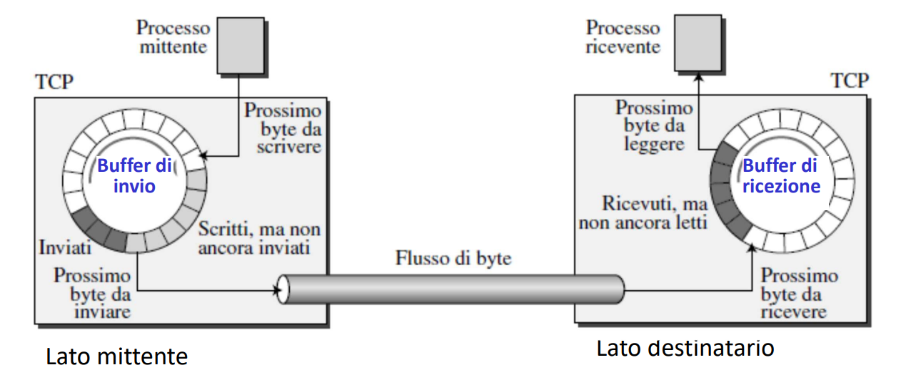
I processi a liv applicativo scrivono e leggono byte nel/dal buffer a velocità diverse. Entrambi i lati avranno buffer di invio e buffer di ricezione
TCP - Formato segmento, apertura e chiusura connessione
Il flusso di byte viene partizionato in SEGMENTI dove ognuno ha un suo header e ognuno viene consegnato al livello IP
TCP numera i BYTE (e non i segmenti)
Numero di sequenza associato a un segmento = numero (nel flusso) del 1° byte (di dati) del segmento
Numero di riscontro = numero ultimo byte correttamente ricevuto + 1
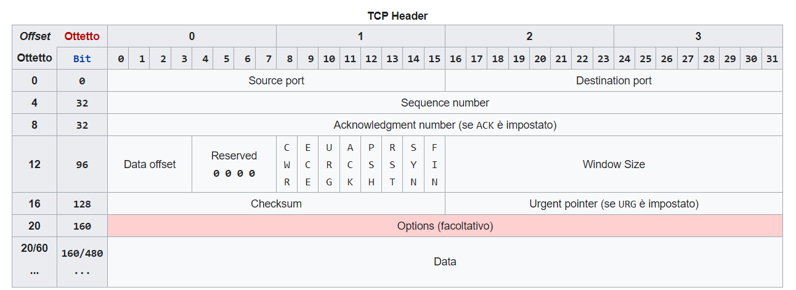
Generico Segmento tcp. IL segmento è il PDU del TCP
Segmento TCP - note
Numero sequenza, Numero di riscontro, Finestra
Essi permettono il flow control, il meccanismo di trasmissione e il riordino dei pacchetti in ricezione
Porta (16 bit): numeri di porta della comunicazione
Numero di sequenza (32 bit): numero di sequenza nello stream del primo byte di dati di questo segmento. Se il flag SYN è settato il numero di sequenza è ISN (Initial sequence number) e il primo byte di dati è ISN+1
Numero di riscontro (32 bit): se il bit ACK è settato, questo campo contiene il valore del prossimo numero di sequenza che il mittente del segmento di aspetta di ricevere dall'altro host.
Hlen (4 bit): lunghezza dell'header TCP espressa in parole da 4 byte
Segmento TCP - campi
Bit Codice: sono 6 flag e servono per:
URG: puntatore urgente per dati in via prioritaria
ACK: il campo numero di riscontro contiene dati significativi
PSH: Funzione Push (Trasferimento immediato dei dati in un segmento dal livello di trasporto al livello applicativo)
RST: reset connessione
SYN: Sincronizza il numero di sequenza
FIN: Non ci sono altri dati dal mittente - chiusura connessione
Finestra di ricezione (16 bit): indica il numero di byte di dati a partire da quello indicato nel campo Numero di Riscontro che il mittente di questo segmento è in grado di accettare
Checksum (16 bit): Usato per rilevare errori
Opzioni: negoziazione di vari parametri
Campo URGENT: per trasmissioni di dati "fuori banda" ovvero in priorità alta gestita dall'applicazione
Puntatore Urgente (16 bit): offset positivo a partire dal Numero di sequenza del segmento corrente. Fa passare i dati urgenti in testa alla coda di ricezione
Gestione connessione
Handshaking a 3 vie per istaurazione connessione
Trasferimento dati
Chiusura connessione
Apertura connessione
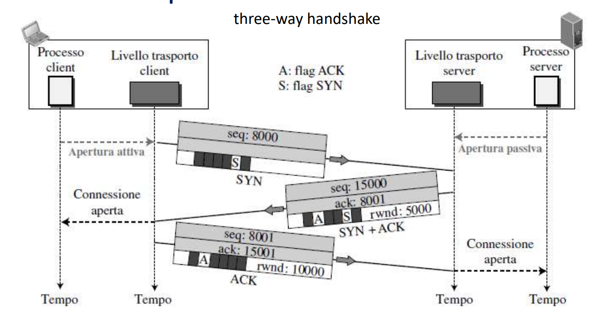
Generico Segmento tcp. IL segmento è il PDU del TCP
Chiusura connessione
Client e server chiudono il loro lato della connessione
Invio del segmento TCP con bit FIN=1
Ciascuno risponde al FIN ricevuto con un ACK
Quando viene ricevuto un FIN, l'ACK può essere combinato con il proprio FIN
è possibile anche lo scambio simultaneo di FIN
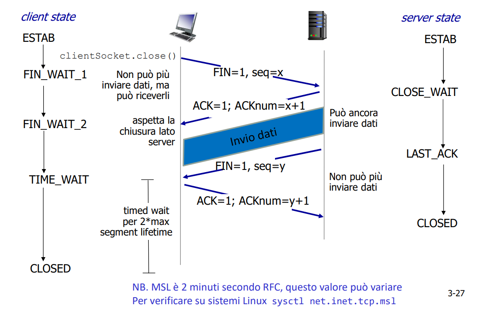
Generico Segmento tcp. IL segmento è il PDU del TCP
TCP - Trasferimento dati affidabile, controllo flusso, controllo di congestione
UDP
Strato applicativo HTTP2 HTTP3 QUIC
Strato di Rete
Responsabile della consegna dei datagrammi tra host
Offre servizi allo strato di trasporto
Utilizza i servizi dello strato di collegamento
Funzionamento base
L'entità a livello di rete riceve i segmenti dal livello di trasporto nell'host mittente, incapsula i segmenti in datagrammi
I datagrammi sono inoltrati al prossimo nodo (host o router)
Il router esamina i campi intestazione in tutti i datagrammi IP che lo attraversano e li inoltra da un collegamento in ingresso ad un collegamento in uscita
Sul lato destinatario, consegna i segmenti al livello di trasporto (Demultiplexing TCP o UDP)
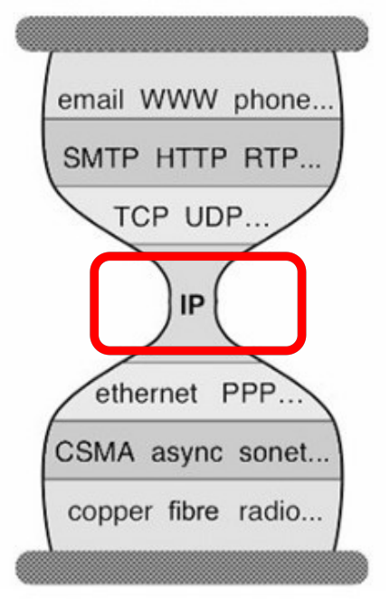
Il livello rete è presente negli host mittente, destinatario e nei router (Il liv trasporto solo negli host terminali) e riesce a interconnettere reti ETEROGENEE
Internet: rete logica costruita da un insieme di reti fisiche
Grazie al livello di rete si offre un'astrazione che consente agli host e reti eterogenei di funzionare dal punto di vista logico come una singola rete
Modello a clessidra: Innovazione possibile nei livelli sottostanti e superiori